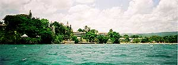
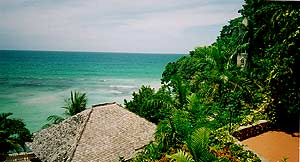
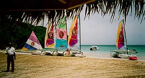

|
The Honeymoon! We went
to a resort/spa in Jamaica called Grand Lido Sans Souci. We wanted total
relaxation and not to have to work for anything, and this place certainly
delivered. The weather was great, the spa treatments were divine, and
we met some fun people. All in all, a very "honeymoony" honeymoon.
Perfect. Here are some views of the spa.
(click on an image
to see it larger in a new window)

This is a view of the entire resort taken from our glass-bottom boat tour.
The spa area is on the left (you can see the special massage hut, my personal
favorite!), the main hotel buildings and restaurants are in the middle,
and the beach and recreation areas extend to the right.

This is the view from our room. Not bad!

A view of the water sports area. We took out a catamaran and had a big
adventure! This photo was taken while relaxing on the beach under a thatched
shade device. That sun was killer. We used a whole tub of SPF45 while
we were there.
|